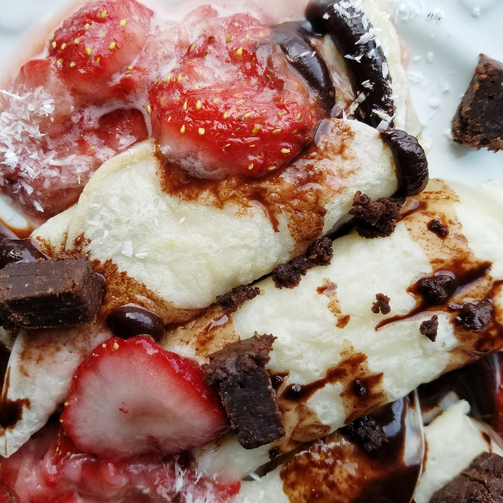

Vegan Strawberry Crepes (gf, healthy)


Oh CREPE! It's Monday again. How about these vegan strawberry crepes for consoling? Yes please. I had too much fun slow-poking over the weekend just playing Zelda and other miscellaneous Switch games and like. Responsibilities hit hard today. Not to mention the time change!! Is it acceptable to sleep at 5 pm? Cool. Great.
I just got this flour called "ener-g egg replacer" and it worked flawlessly in this recipe! I'm excited to play more with this recipe and that flour. I really like the texture of it. I was able to get them really thin instead of thick and pancake-y.
I topped these sweet vanilla crepes with strawberries, coconut, cocoa stevia syrup, and black bean brownies. What would you top yours with?! Soo many choices I'm overwhelmed by options. This recipe is vegan, gluten free, sugar free, and oil free! Enjoy with a clear conscious :) and go on with your bad self.
Vegan Strawberry Crepes
Serves: 1
-
1/4 cup all purpose flour (use gluten free flour if needed)
-
1 TBSP egg replacer
-
1 stevia packet
-
1/4 tsp baking powder
-
1/4 tsp vanilla extract
-
~1/2 cup almond milk
In a small bowl, mix together the flour, egg replacer, stevia, and baking powder. Once evenly mixed, slowly stir in the almond milk and vanilla extract until a thin batter is formed. You may need more or less than 1/2 cup almond milk; you want it thinner than pancake batter but thicker than water (obviously). Once ready, spray a large skillet with nonstick spray and pour your batter in, moving around evenly so that the entire base of the skillet is thinly coated. Cook in a low heat until the crepe is cooked (1-2 minutes), flip, and cook another minute. Depending on the size of your skillet, you may need to repeat this process another 1-2 times to make a total of 1-3 thin crepes.